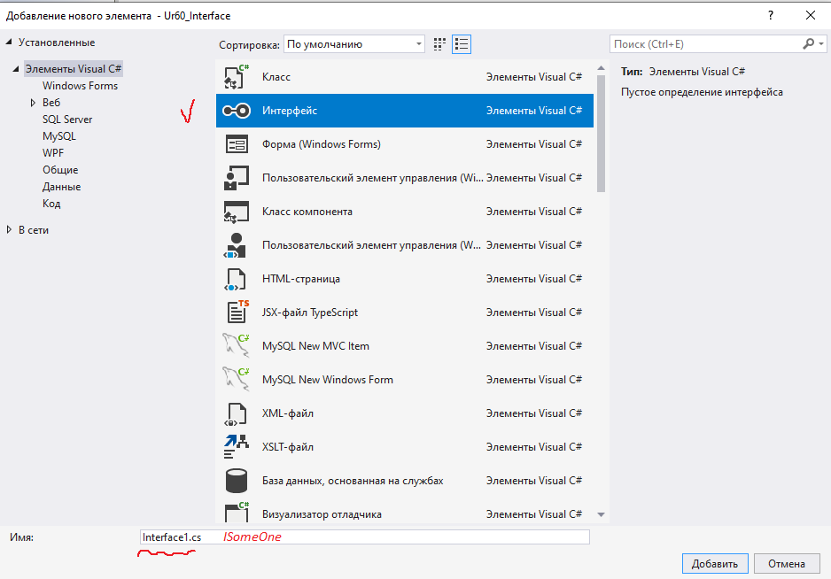

| Тема 1 Простой пример реализации интерфейса | ||
| Назад | ||
|
Во многих языках программирования реализована возможность множественного наследования, когда один класс имеет несколько классов родителей. В языке C# такой функциональности нет и чтобы решить эту проблему можно использовать интерфейсы.
Что такое интерфейс?Интерфейсы очень схожи с абстрактными классами и предоставляют лишь методы без реализации.
В интерфейсах можно записать методы, что должны реализовываться во всех классах, использующих интерфейс. Это удобно, ведь за счёт такого функционала мы можем быть уверены в классах и будем знать что они реализовывают все те функции, что мы предусмотрели заранее.
Как создать интерфейс?
Создаем файл интерфейса

Для создания интерфейса используется ключевое слово interface ISomeOne { //кто-то
void Change (string val); } В интерфейсе можно не прописывать модификаторы доступа и По-умолчанию будет проставлен модификатор public.
Для реализации функционала в интерфейсе необходимо создать класс
и указать что он является классом, реализующим определенный
интерфейс. Для этого после названия класса пропишите слово class Person : ISomeOne { string name; string lastname; int age; public Person(string name, string lastname, int age) { this.name = name; this.lastname= lastname; this.age = age; } public void Change (string val) { this.name = val; Console.WriteLine("Как ваше имя - " + val); } } |
||
| Конспект подготовлен Бакулиным А. М. 2022 год. | ||